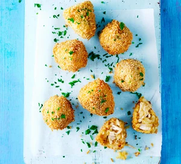

- 1 hr 30 mins
- 14 croquettes
Ingredients
- 2 boneless skinless chicken breasts (300-350g)
- 450g floury potatoes (such as King Edward), peeled and quartered
- 2 tbsp olive oil
- 1 large onion, finely chopped
- 4 tbsp Cabana spicy malagueta marinade (available at cabana-brasil.com) or Cholula hot sauce
- 100g plain flour
- 2 eggs, lightly beaten
Method
- Bring a pan of salted water to the boil, then reduce to a simmer. Poach the chicken very gently for 10 mins. Remove from the heat, cover and cook for 10-15 mins more until cooked through. Use a slotted spoon to remove the chicken and leave to cool. Reserve the poaching liquid.
- Bring the liquid to the boil, add the potatoes and simmer for 15-20 mins until just tender. Drain, then leave to dry out before mashing and seasoning.
- Meanwhile, heat the olive oil in a pan, add the onion and stir over a medium-low heat for 8-10 mins. To assemble, shred the chicken in a bowl, mix in the mash, onions and marinade, then taste and season. With damp hands, shape about 50g of mixture into a teardrop shape. Set it upright on a plate and repeat with the rest of the mixture. Coat each in flour, egg and breadcrumbs. Cover with cling film and chill for at least 1 hr..
- Heat the vegetable oil in a deep fryer or large saucepan to 170C or until a piece of bread browns in 30 secs. Fry in batches for 3-4 mins until golden, turning once or twice. Remove and drain on kitchen paper. Serve warm with the parsley scattered over.